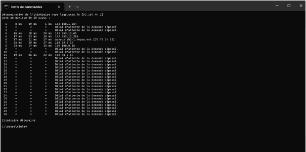
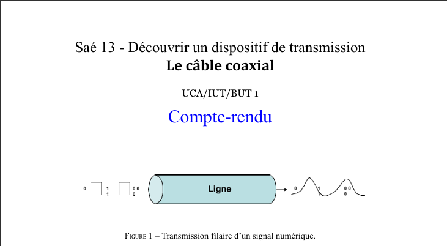
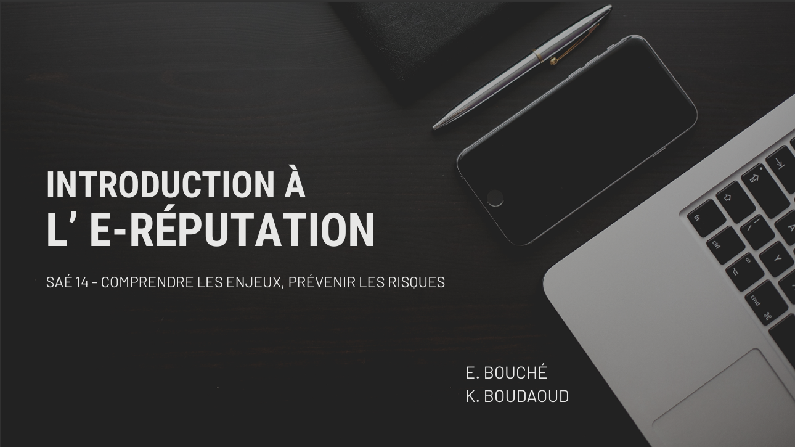
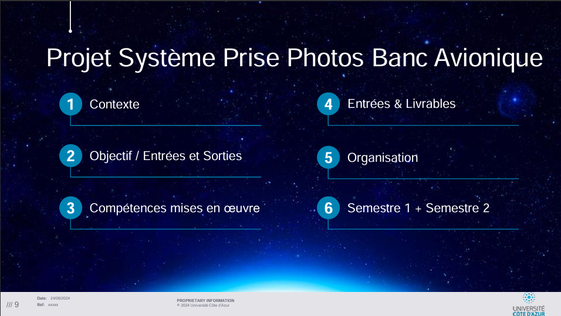
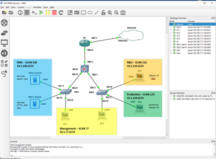
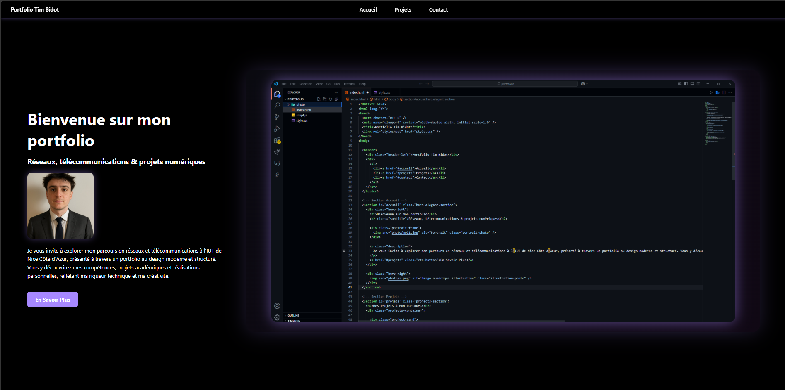

Introduction
Cette section présente une sélection de projets significatifs réalisés dans le cadre de ma première année en BUT Réseaux et Télécommunications à l'IUT de Nice. Ces projets couvrent les domaines fondamentaux de la formation : réseaux, télécommunications, cybersécurité, traitement du signal, systèmes d’information et d’exploitation.
S'initier aux réseaux informatiques
Description : Conception et simulation d'un réseau simple avec Cisco Packet Tracer...
Compétences : Adressage IP, modélisation de réseau, configuration de base des équipements actifs.
Analyse d'un dispositif de transmission
Description : Étude et caractérisation de signaux analogiques et numériques...
Compétences : Analyse spectrale, instrumentation, compréhension des mécanismes de transmission physique.
Se présenter sur Internet
Description : Animation d’un atelier sur l’e-réputation pour des collégiens, avec supports interactifs.
Compétences : Communication, vulgarisation, outils interactifs.
Banc avionique
Description : Extraction et analyse de données structurées avec Python...
Compétences : Manipulation de fichiers CSV, bibliothèques Python, esprit analytique.
Construire un réseau pour une structure
Description : Conception d'un réseau local d'entreprise (adressage, topologie, sécurité)...
Compétences : VLAN, DHCP, DNS, firewall, planification technique.
Portfolio de compétences
Description : Synthèse des compétences acquises en BUT1 sous forme de site web personnel...
Compétences : Autonomie, réflexivité, communication digitale, design web.
Compétences Techniques Acquises
- Réseaux IP : IPv4, VLAN, routage statique
- Administration Linux : ligne de commande, services
- Développement Web : HTML, CSS, responsive
- Cybersécurité : firewall, segmentation
- Transmission : analyse de signal, mesure physique
- Python : analyse de données, scripts simples